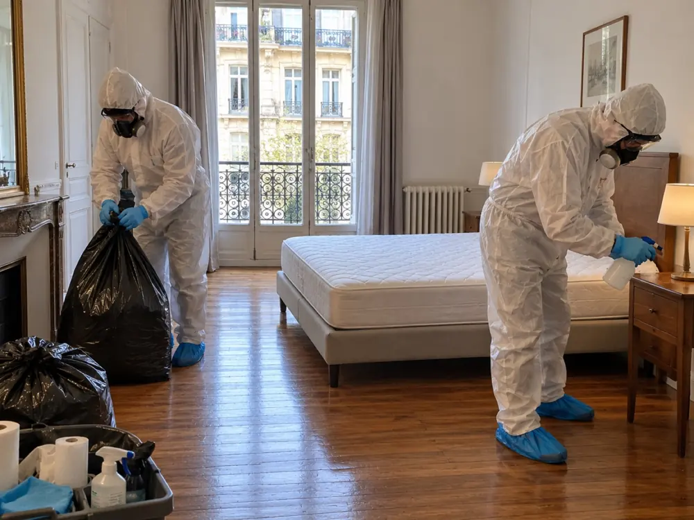

Nettoyage syndrome de Diogène à Paris 6e (75006)
Un accompagnement posé et respectueux pour remettre en état un logement du 6e arrondissement, sans précipitation.
Entre le jardin du Luxembourg et Saint-Germain-des-Prés, derrière de belles façades, un appartement peut se refermer sur l’accumulation sans que l’entourage sache comment aborder le sujet. Le XV du Nettoyage intervient à Paris 6e avec tact, discrétion et sans jugement.
Selon le devis remis après la visite, nous assurons le tri des effets personnels, le débarras, le nettoyage approfondi, la désinfection et le traitement des origines d’odeurs.
gratuitvisite et chiffrage
Au cœur de Saint-Germain-des-Prés, traiter un logement encombré avec délicatesse
Le 6e arrondissement couvre 215 hectares sur la rive gauche. Il compte quatre quartiers : Monnaie, Odéon, Notre-Dame-des-Champs et Saint-Germain-des-Prés, autour du jardin du Luxembourg.
Un quartier réputé pour son cadre n’est pas épargné par l’isolement. Un appartement très encombré peut s’y dissimuler longtemps, derrière une porte soignée, tant qu’aucun événement ne force le regard : une fuite, une hospitalisation, une odeur au palier. Il appartient à un médecin de qualifier la situation ; notre travail est de rendre le logement de nouveau propre, praticable et sûr.
Nous intervenons dans les studios, les appartements familiaux et les chambres de service du 75006, des abords d’Odéon à ceux de Montparnasse. Visite et devis écrit sont gratuits.
- Visite à domicile, puis devis écrit avant toute intervention
- Tri soigneux des papiers, de l’argent, des bijoux et des souvenirs
- Débarras, nettoyage, désinfection et traitement des odeurs selon le devis
- Équipes en tenue de protection, véhicule sans logo

Débarrasser un appartement Diogène près du Luxembourg, d’Odéon ou de Saint-Sulpice
Les immeubles du 6e sont de natures variées : anciens avec escalier étroit, ou plus récents avec ascenseur. Le matériel de portage, le stationnement du véhicule et la protection des parties communes se décident donc au cas par cas.
Pendant la visite, nous notons l’étage, la largeur de l’escalier ou la taille de l’ascenseur, et le chemin jusqu’au véhicule. Dans ce quartier prisé, où le stationnement est parfois difficile, nous convenons avec vous du meilleur créneau pour charger sans gêner les voisins.
Indiquez-nous votre rue et la station la plus proche : Odéon, Saint-Germain-des-Prés, Saint-Sulpice, Mabillon, Vavin, Duroc ou Sèvres - Babylone, par exemple. Nous fixons ensuite l’heure d’arrivée et la protection des couloirs et de l’ascenseur.

Syndrome de Diogène : les indices à connaître
Aucun logement ne ressemble à un autre, et seul un professionnel de santé peut évoquer un syndrome de Diogène. Voici néanmoins ce que l’on observe régulièrement.
Des pièces devenues inutilisables
Lit, table ou évier disparaissent sous les affaires, et l’on ne vit plus que dans un coin du logement.
Un attachement aux objets
Même cassés ou périmés, les objets sont gardés, car s’en séparer semble impossible ou angoissant.
Des déchets laissés sur place
Les sacs restent dans les pièces, les restes de repas s’accumulent et l’air devient lourd.
Du courrier qui s’empile
Les enveloppes ne sont plus ouvertes, ce qui peut entraîner des impayés et des ennuis administratifs.
Une toilette et un ménage délaissés
La fatigue, le chagrin ou l’isolement conduisent à renoncer à l’entretien du corps et de la maison.
Un refus de laisser entrer
On cache la situation par pudeur. L’approche doit être douce, jamais accusatrice, et prendre du temps.
Voir l’un de ces indices ne permet pas de conclure à un syndrome. Mieux vaut en parler avec bienveillance, puis alerter le médecin traitant ou un service social. Le nettoyage se prépare ensuite avec la personne, selon ce qu’elle peut accepter.
De la demande au bilan : six étapes annoncées à l’avance
Chaque étape vous est expliquée avant qu’elle ne commence, pour éviter toute surprise.
Votre demande
Vous nous précisez l’adresse, l’étage et ce que vous savez de l’état du logement. Si c’est possible, quelques photos par SMS accélèrent la préparation.
Passage sur place
Nous visitons chaque pièce, regardons comment accéder au logement et évaluons ce qu’il faudra sortir, tout en repérant avec vous les objets à garder.
Proposition chiffrée
Le devis écrit sépare le tri et le débarras, le nettoyage, la désinfection et les éventuels travaux. Le chantier ne démarre qu’avec votre accord.
Sécurisation et tri
Nous dégageons d’abord les zones de passage, puis nous trions chaque pièce selon les consignes convenues ensemble.
Nettoyage et désinfection
Les pièces sont nettoyées en profondeur puis désinfectées selon le devis, avec un traitement des origines d’odeurs.
Clôture du chantier
Vous recevez une facture détaillée et nous faisons le tour des pièces avec vous.
Pour en savoir davantage sur notre façon de travailler, ouvrez la page méthode.
Sauvegarder l’important avant d’évacuer le reste
Sous les piles d’objets se trouvent parfois des choses irremplaçables : actes de propriété, livrets, correspondances, billets glissés dans un tiroir, bijoux de famille. Un débarras mené trop vite risquerait de les emporter avec les déchets.
Avant de commencer, nous fixons avec vous ce qui sera conservé : documents administratifs, papiers d’identité, argent et bijoux, photographies et souvenirs, clés et objets personnels importants. Ces éléments sont réunis à part, puis rendus à l’occupant, à ses proches ou à son représentant. Les déchets, les objets brisés et les éléments souillés sont évacués. Si nous trouvons un objet de valeur, ou si un désaccord se manifeste sur son sort, nous suspendons le tri concerné le temps de clarifier.
Pensez aux annexes : cave, grenier, chambre de service ou balcon. Signalez-les pendant la visite pour qu’elles apparaissent dans le devis.

Un logement vidé réclame encore un nettoyage profond et une désinfection adaptée
Une pièce dégagée n’est pas nécessairement saine : la saleté ancienne, l’humidité et les restes alimentaires marquent durablement les surfaces et les tissus.
Nous procédons pièce par pièce, en débutant par la cuisine et les sanitaires, généralement les plus touchés. Le nettoyage approfondi précède une désinfection choisie en fonction des matériaux et des besoins, comme le prévoit le devis. Pour les odeurs, nous remontons à leur origine afin de les traiter à la source au lieu de les masquer.
Si nous constatons des cafards, des rongeurs ou des punaises de lit, nous vous le disons. Leur élimination est le métier d’un spécialiste de la désinsectisation ou de la dératisation, dont nous pouvons faciliter l’intervention en lien avec notre chantier.


Des surfaces remises en propreté et un constat transparent sur l’état du logement
Selon le devis, l’intervention comprend le tri, le débarras, le nettoyage approfondi, la désinfection et le traitement des odeurs. Les surfaces concernées sont remises en propreté : sols, murs, vitres, radiateurs, cuisine et sanitaires.
Une fois le logement dégagé, des défauts jusque-là invisibles peuvent apparaître : parquet détérioré, humidité, moisissures, électricité ou plomberie à examiner, revêtements endommagés. Nous vous en informons franchement. Les travaux éventuels sont chiffrés dans un devis complémentaire.
- Sols, murs, vitres et radiateurs nettoyés selon le devis
- Cuisine et sanitaires désinfectés de manière adaptée
- Facture détaillée et visite finale de chaque pièce

Prix d’un nettoyage Diogène à Paris 6e : les critères du devis
Un tarif au mètre carré ne reflète pas la réalité : deux logements de même surface peuvent demander des chantiers très différents. Voici ce que nous évaluons pendant la visite.
Surface et dépendances
Un studio ou un grand appartement avec cave et chambre de service : le périmètre n’est pas comparable.
Masse à évacuer
Le nombre de sacs, de cartons et de meubles fixe le temps de tri et de portage.
Étage et accès
Un escalier sans ascenseur ou un stationnement éloigné ajoutent du temps à chaque rotation.
État des surfaces
Un logement encombré mais propre ne se traite pas comme un logement très souillé.
Nuisibles et moisissures
Leur présence exige un traitement spécialisé, prévu en plus du nettoyage.
Travaux de remise en état
Ce qui relève de la rénovation est chiffré séparément, avec votre accord.
Le devis est écrit, gratuit et remis après la visite. Il indique ce qui sera réalisé selon l’état du logement : tri et débarras, nettoyage approfondi, désinfection et traitement des odeurs lorsque c’est utile, puis travaux complémentaires éventuels chiffrés à part. Pour comprendre comment il se construit, voyez notre page tarifs.
Bien choisir son entreprise de nettoyage Diogène : les vérifications utiles
L’intervention touche à la vie privée : comparez des devis écrits en les examinant ligne par ligne. Avant de vous engager, assurez-vous de :
- L’identité de l’entreprise : numéro SIRET et assurance de responsabilité civile professionnelle
- La composition du prix : tri, évacuation, déchetterie, désinfection, et ce qui n’est pas inclus
- La gestion des papiers, de l’argent et des objets personnels
- La visite préalable : un prix donné par téléphone sans avoir vu le logement reste approximatif
- La discrétion : véhicule sans logo, tenue neutre, horaires compatibles avec l’immeuble

Enfants, voisins, bailleurs, syndics ou tuteurs : comment réagir
Les appels viennent d’enfants, de voisins, de propriétaires, de syndics, de tuteurs ou de travailleurs sociaux. Ils suivent souvent un événement : une odeur, un dégât des eaux, une hospitalisation, un décès ou un projet de vente.
L’occupant est consentant
Nous le rencontrons, avec les personnes habilitées à l’accompagner. Nous lui expliquons le déroulement, repérons ce à quoi il tient et trions avec lui, sans rien imposer.
L’occupant s’y oppose
Mieux vaut attendre que forcer la porte. Rapprochez-vous de son médecin, d’une assistante sociale ou de son représentant légal. Nous n’agissons pas contre le refus de l’occupant.
La situation est urgente
Si une personne est en danger, prévenez d’abord les secours. Le nettoyage du logement viendra ensuite.
Le logement est très dégradé sans relever du syndrome de Diogène ? Consultez notre page logement insalubre. Nous intervenons aussi dans les arrondissements proches : Paris 5e, Paris 7e, Paris 14e et Paris 15e.
Nettoyage Diogène dans les autres arrondissements de Paris
Le XV du Nettoyage intervient dans les vingt arrondissements, avec la même méthode et le même devis écrit gratuit après visite. Retrouvez la page de votre quartier :
Paris 1er · Paris 2e · Paris 3e · Paris 4e · Paris 5e · Paris 7e · Paris 8e · Paris 9e · Paris 10e · Paris 11e · Paris 12e · Paris 13e · Paris 14e · Paris 15e · Paris 16e · Paris 17e · Paris 18e · Paris 19e · Paris 20e
Nettoyage Diogène à Paris 6e : vos questions
Combien faut-il prévoir pour un nettoyage Diogène dans le 6e arrondissement ?
Le coût n’est pas le même pour tous les logements : il varie selon la surface, la quantité de biens à évacuer, l’étage, l’état des pièces et les traitements nécessaires. Nous remettons un devis écrit gratuit après la visite, avant tout engagement de votre part.
Peut-on décider du nettoyage de l’appartement d’un parent sans son consentement ?
Pas toujours. Le syndrome de Diogène ne retire pas d’office à une personne sa capacité juridique, et ses droits comme sa dignité demeurent, même sous curatelle ou sous tutelle. Selon la mesure de protection, la décision revient à la personne qui en a la charge, ou parfois au juge. Si l’occupant s’oppose au nettoyage ou si la famille ne s’accorde pas, nous n’intervenons pas sans base légale suffisante et nous vous conseillons de contacter le médecin traitant, le service social ou le représentant légal.
Pouvez-vous intervenir dans un appartement de standing ou un immeuble ancien sans ascenseur ?
Oui. Pendant la visite, nous examinons l’escalier ou l’ascenseur, l’étage et le trajet jusqu’au véhicule, puis nous prévoyons le matériel, le nombre d’intervenants et les rotations. Ces contraintes d’accès influencent la durée du chantier et le devis.
Peut-on rester dans son logement pendant le nettoyage ?
Oui, si vous le souhaitez. Votre présence facilite le tri, puisque vous indiquez directement ce qui compte pour vous. Nous pouvons aussi convenir d’une présence partielle pendant le chantier, avec votre accord.
Comment les déchets sont-ils éliminés ?
Ils sont séparés selon leur nature : recyclage, déchetterie ou filière spécialisée pour les déchets souillés. Le devis décrit comment l’évacuation est organisée.
Proposez-vous aussi un nettoyage après décès dans le 6e arrondissement ?
Oui, c’est une autre prestation, avec sa propre page : nettoyage et désinfection d’un logement après un décès à Paris.
Un appel, un devis gratuit à Paris 6e
Donnez-nous l’adresse, l’étage, le type de logement et dites-nous si quelqu’un y habite encore. Quelques photos par SMS aident à préparer la visite. Tout reste confidentiel.
07 57 83 26 26